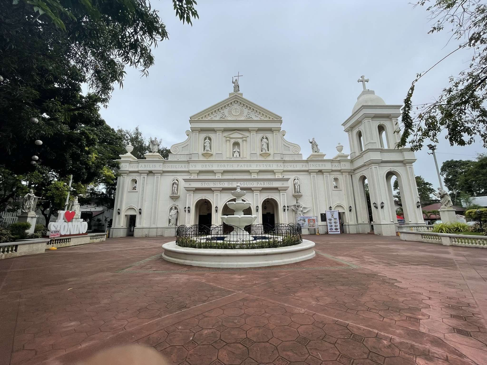
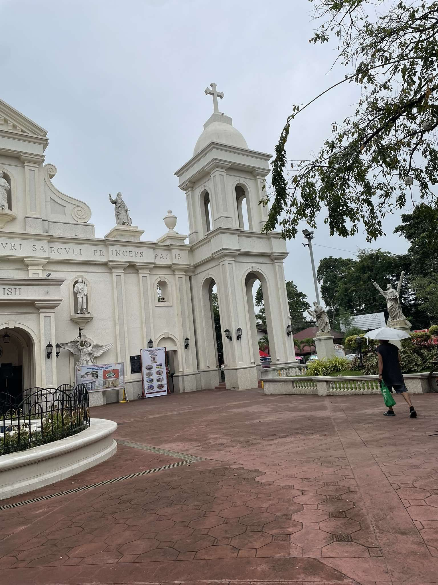
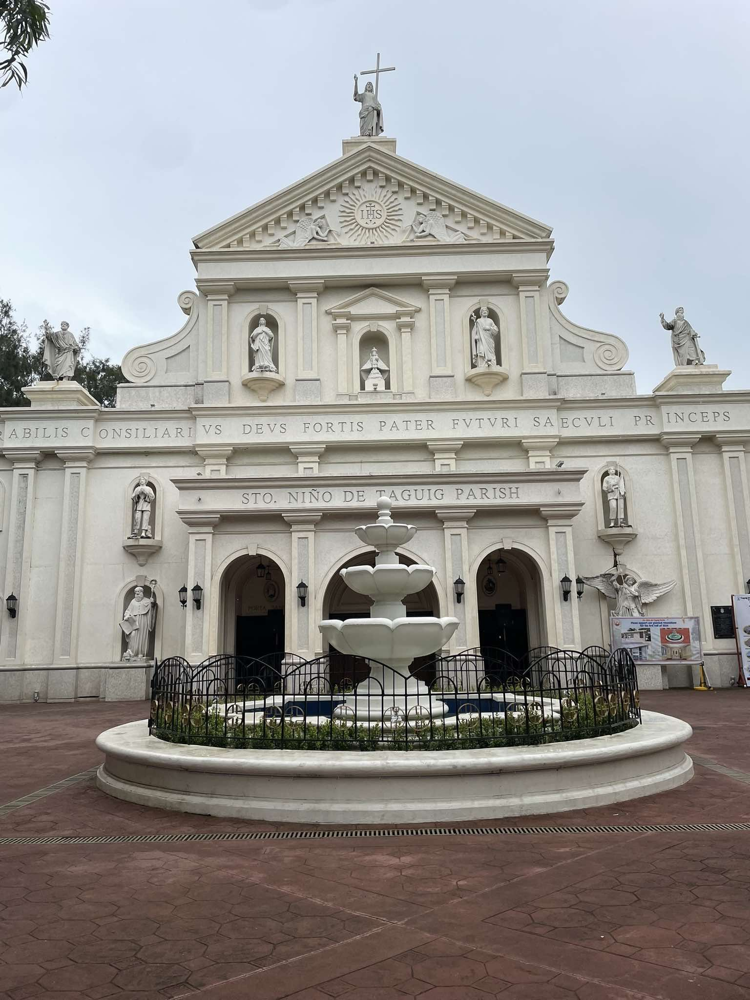
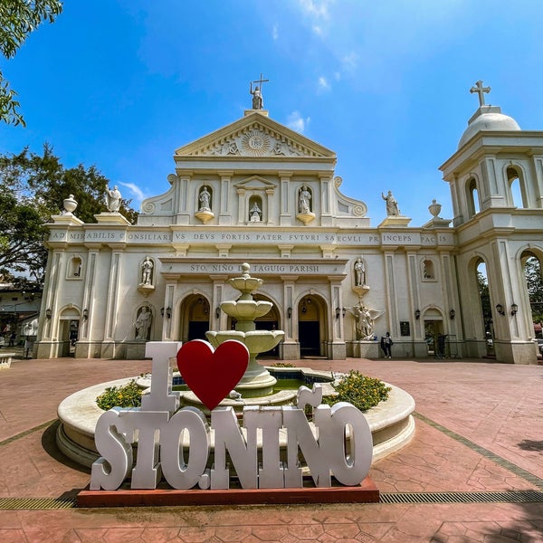
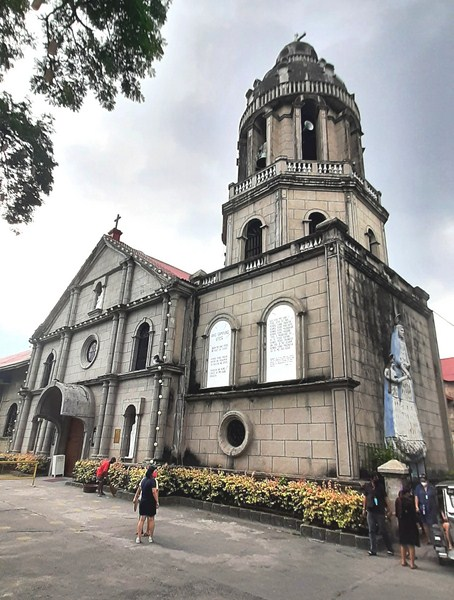
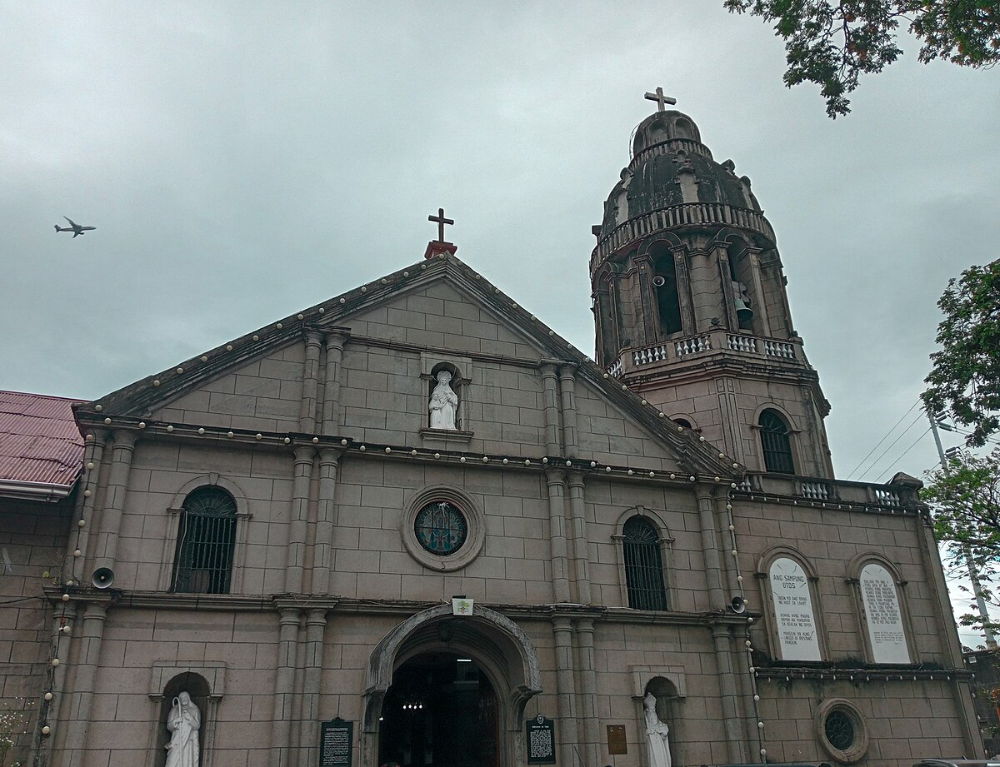
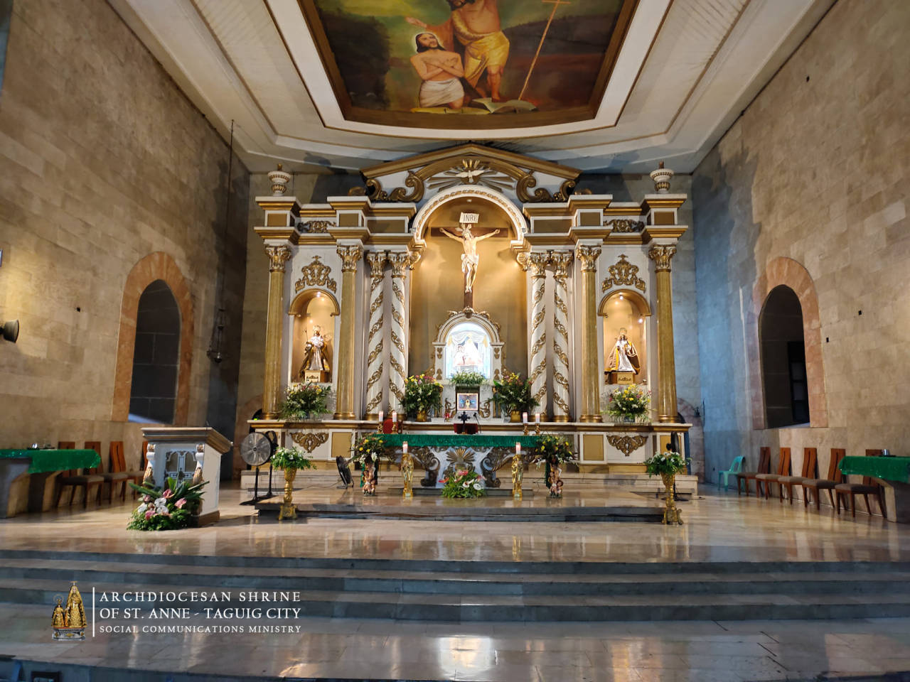
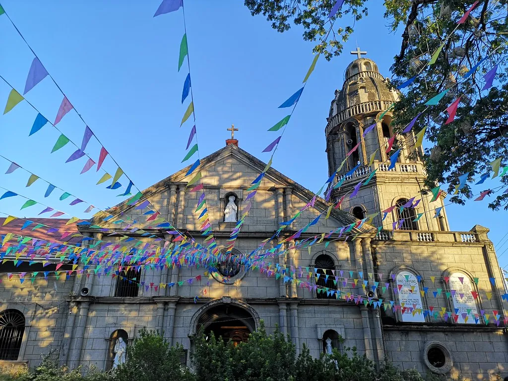

Santo Niño de Taguig

Santo Niño de Taguig A prominent church in the area, Santo Niño is celebrated for its strong community ties and vibrant religious festivals, drawing devotees from all over the city.



St. Anne Parish Church
St. Anne Parish Church A historical gem in Taguig, St. Anne Parish Church has been a spiritual center for over four centuries. Known for its beautiful architecture, it serves as a place of worship and a testament to the city’s rich religious heritage.



